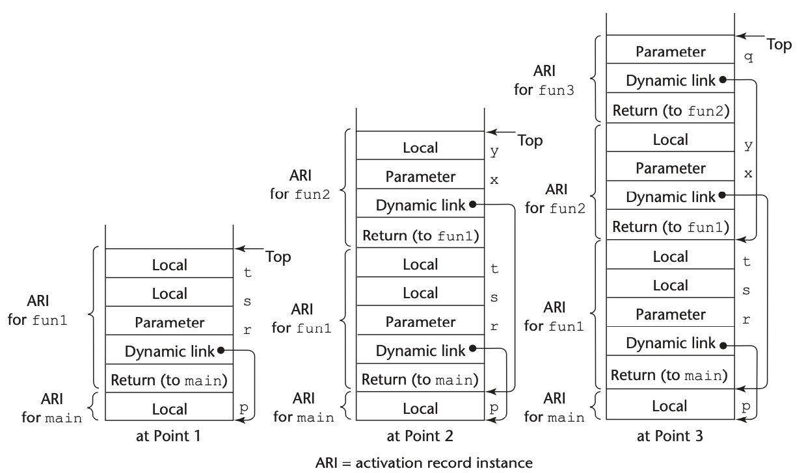

Programming Languages
Module 9: Implementing Subprogram; ADT; Object-oriented Programming Language
Xingang (Ian) Fang
Implementing Subprograms
Semantics of Calls and Returns
Simple Subprograms
Subprograms with Stack-Dynamic Variables
Nested subprograms
Blocks
Dynamic scoping
Semantics of Calls and Returns
Subprogram linkage
During call:
Save execution status
Compute and pass parameters
Transfer control
During return:
Handle out mode parameters
Restore execution status
Transfer control back
Simple Subprograms
“Simple” subprograms:
Cannot be nested
All local variables are static
Example: Early versions of Fortran
Actions for call:
Save execution status
Compute and pass parameters
Pass return address
Transfer control
Actions for return:
Handle out mode parameters
Return function value if needed
Restore execution status
Transfer control back
Distribution of actions between caller and callee
Activation Records
Purpose: Storage of information needed for subprogram execution
Contains:
Status information about caller
Parameters
Return address
Return value (for functions)
Temporaries
Local variables
Subprograms with Stack-Dynamic Variables
More complex implementation needed for:
Dynamic allocation/deallocation of locals
Support for recursion
Multiple simultaneous activations
Activation record instance contents:
Return address
Dynamic link
Parameters
Local variables
Run-time Stack: Manages activation record instances
Demonstration: Stack and Subprogram Calls
Credit: Textbook
Nested Subprograms
Nested subprograms:
Can be nested
Can access variables in outer scopes
Focus on static-scoped languages that support nested subprograms
Static scope
Variables accessed by name
Scope determined at compile time
Static links to access non-local variables
Static chain method
Static Chain Implementation
Adds static link to activation records
Links point to static parent’s activation record
Used for accessing nonlocal variables
Components:
Chain offset calculation
Local offset determination
Activation record traversal
{kind=link}
Credit: Textbook
Block Implementation
Two main approaches:
Static Chain Method:
Treats blocks as parameterless subprograms
Creates activation records
Uses static links
Simple Method:
Allocates block variables in activation record
Computes static offsets
More efficient for most cases
Practice Questions
What are the key differences between simple and complex subprogram implementations?
How does recursion affect activation record management?
Compare static and dynamic scoping implementations.
What are the tradeoffs between different block implementation approaches?
Abstract Data Type
The textbook chapter about abstract data type is focusing on the implementations only, and is not a comprehensive coverage of the topic.
You may read the textbook for language implementation details about abstract data type.
Support for Object-Oriented Programming
Introduction to object-oriented programming principles
Key design issues in OOP languages
Comparison of OOP implementations across languages:
Smalltalk, C++, Objective-C, Java, C#, Ruby
Implementation considerations for OOP constructs
Reflection in OOP languages
Fundamentals of Object-Oriented Programming
Three essential characteristics:
Abstract data types
Inheritance
Dynamic binding
Objects and Classes
Classes define objects (instances)
Objects have state (data) and behavior (methods)
Key Terminology
Methods: operations defined in classes
Messages: calls to methods
Message protocol: collection of methods of a class
Inheritance Concepts
Inheritance is central to OOP
Creates hierarchies of related classes
Allows code reuse and specialization
Inheritance hierarchy terms:
Base class/superclass/parent class
Derived class/subclass/child class
Inheritance enables:
Adding new variables/methods
Inheriting implementation and/or interface
Modifying inherited methods (overriding)
Types of Inheritance
Single Inheritance
A class inherits from one parent class
Creates tree-like class hierarchies
Multiple Inheritance
A class inherits from multiple parent classes
Creates graph-like class hierarchies
Can lead to ambiguities (e.g., diamond inheritance)
Alternatives to Multiple Inheritance
Interfaces (Java, C#)
Protocols (Objective-C)
Mixins/Categories (Ruby, Objective-C)
Class Members and Access Control
Instance vs. Class Members
Instance variables/methods: belong to each object
Class variables/methods: belong to the class itself
Access Control Modifiers
Private: visible only within the class
Protected: visible to the class and its subclasses
Public: visible to all client code
Relationship between inheritance and access control
Different languages handle inherited members differently
Dynamic Binding
Dynamic binding (dynamic dispatch):
Runtime determination of which method to call
Essential for polymorphism in OOP
Polymorphism through inheritance:
Variables can reference objects of different types
Method calls dynamically bound to appropriate implementation
Benefits:
Extensibility - new classes can be added without changing client code
Flexibility - behavior determined at runtime
Inheritance-based Polymorphism Demo
classDiagram
%% Shape Hierarchy
class Shape {
-string color
+draw() void
+area() double
}
class Circle {
-double radius
+draw() void
+area() double
}
class Rectangle {
-double width
-double height
+draw() void
+area() double
}
class Triangle {
-double base
-double height
+draw() void
+area() double
}
Shape <|-- Circle
Shape <|-- Rectangle
Shape <|-- Triangle
note "Inherite based Polymorphism:
Shape *shape = new Circle();
shape->draw(); // calls Circle::draw()
shape->area(); // calls Circle::area()"
Inheritance-based Polymorphism
Key Design Issues for OOP Languages
Exclusivity of objects
Are all data items objects, or just some?
Are subclasses subtypes?
Can a subclass always be used where its parent is expected?
Single vs. multiple inheritance
Benefits vs. complexity of multiple inheritance
Object allocation and deallocation
Stack vs. heap allocation
Explicit vs. implicit deallocation
Dynamic vs. static binding
When to use each approach?
Nested classes
Visibility between nesting and nested classes
Object initialization
Constructor calling mechanisms
OOP in Smalltalk
Pure object-oriented language
Everything is an object
All computation through message passing
Key characteristics:
Only single inheritance
All methods dynamically bound
All objects heap-allocated
No explicit deallocation (garbage collection)
No static typing (purely dynamic typing)
Historical significance:
First language to fully support OOP
Influenced GUI development
OOP in C++
Hybrid language (supports multiple paradigms)
Adds OOP to C’s procedural model
Maintains compatibility with C
Key characteristics:
Supports both single and multiple inheritance
Public, protected, private access control
Objects can be static, stack, or heap allocated
Explicit deallocation with delete
Dynamic binding optional (virtual methods)
C++ innovations:
Friend functions
Template-based generic programming
Abstract classes and pure virtual methods
OOP in Java
Pure OOP language with some imperative features
All user-defined types are classes
Primitive types for efficiency
Key characteristics:
Single inheritance for classes
Interface mechanism as alternative to multiple inheritance
All objects heap-allocated
Implicit deallocation (garbage collection)
Methods dynamically bound by default
All classes derived from Object
Java features:
No pointers (references instead)
No destructors (finalizers instead)
Inner classes (static and non-static)
OOP in C#
Similar to Java with additional features
Single inheritance plus interfaces
Value types (structs) and reference types (classes)
Key characteristics:
Methods must be explicitly marked virtual to be overridden
Overriding methods must be marked with override
All classes derived from Object
Properties for controlled access to fields
C# innovations:
Integration with .NET framework
Extension methods
Properties as first-class language features
OOP in Ruby
Pure object-oriented scripting language
Everything is an object
Dynamic typing
Key characteristics:
Single inheritance
All objects heap-allocated
All variables are references
All methods dynamically bound
All instance variables private
Ruby innovations:
Open classes (can be modified at runtime)
Mixins through modules
Blocks and iterators
attr_reader/attr_writer for automatic accessors
Object-Oriented Implementation Issues
Instance Data Storage
Class Instance Records (CIRs)
Layout of inherited members
Method Dispatch
Virtual method tables (vtables)
Method lookup in inheritance hierarchies
Implementation challenges:
Efficient method dispatch
Memory layout for subclasses
Multiple inheritance complexity
Reflection
Ability for a program to examine itself at runtime
Access to metadata about classes and objects
Dynamic invocation of methods
Reflection capabilities:
Introspection: examining structure of objects
Dynamic method calls
Creating new types/objects at runtime
Reflection in Java vs. C#:
Java: java.lang.Class and java.lang.reflect
C#: System.Type and System.Reflection
Tradeoffs:
Flexibility vs. performance
Static vs. dynamic type checking
Practice Questions
What are the three essential characteristics of object-oriented programming?
How does dynamic binding support polymorphism in OOP languages?
Compare single and multiple inheritance. What alternatives to multiple inheritance exist?
How do different languages handle object allocation and deallocation?
What are the advantages and disadvantages of reflection in programming?
Summary
OOP supports modular, reusable code through objects and inheritance
Language design choices significantly impact:
How inheritance is implemented
Method dispatch mechanisms
Memory management approaches
Type system integration
Each language makes different tradeoffs:
Smalltalk: pure OOP, dynamic typing
C++: efficiency, static typing, multiple paradigms
Java/C#: managed environment, single inheritance
Ruby: dynamic, flexible, pure OOP
Understanding these design decisions helps select appropriate languages for different applications